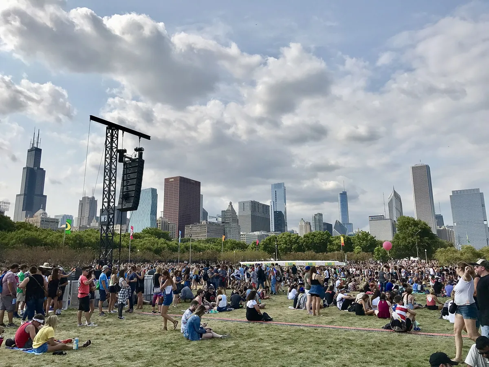
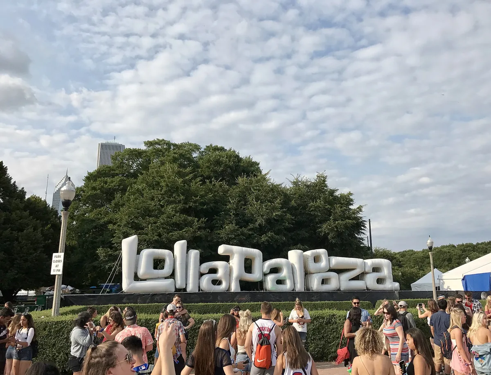
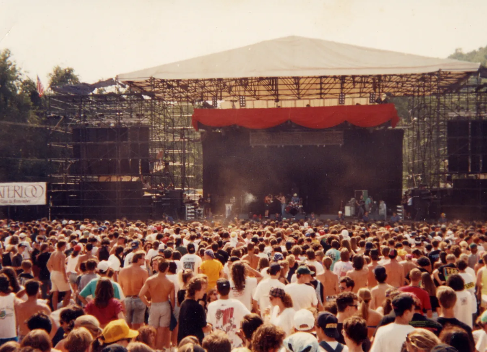
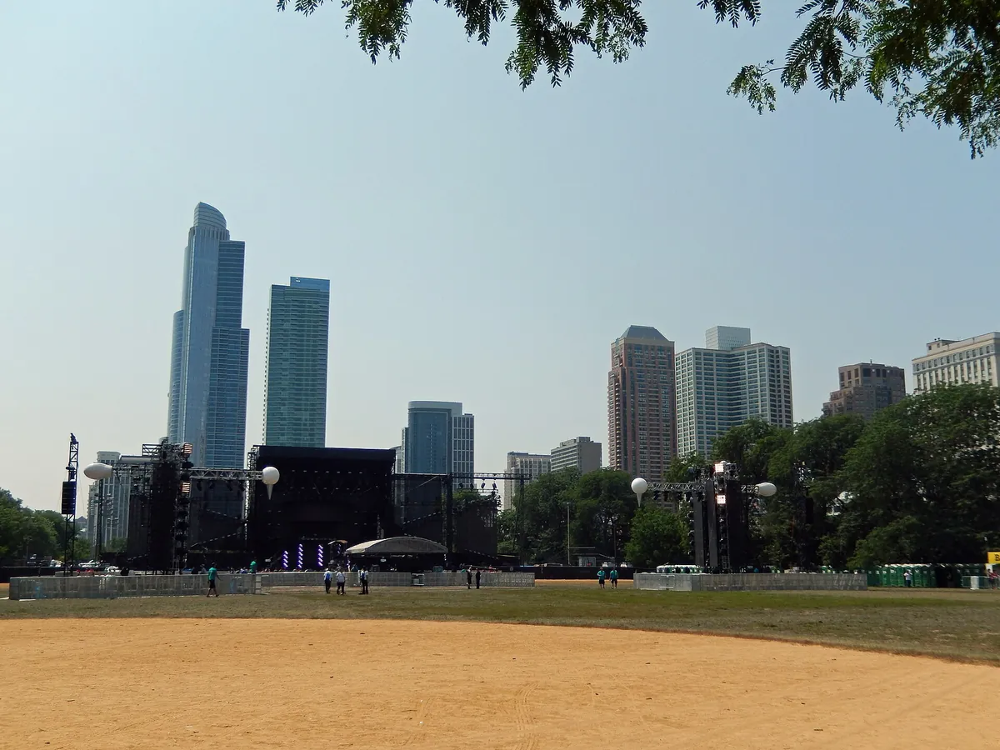

Lollapalooza
Lollapalooza Chicago
Four days every summer in Grant Park on the Chicago lakefront. Where it happens, how a farewell tour became a permanent festival, and what plays across its stages.
A farewell tour that stayed.
Lollapalooza started as a farewell. In 1991 Perry Farrell put his band Jane's Addiction at the top of a touring bill of alternative rock, industrial music and rap and took it across North America; Spin later rated that first tour the best concert of the preceding 35 years. It faded in the late 1990s, returned for a poorly attended tour in 2003, and had its planned 2004 tour cancelled before it began. In 2005 it came back as a festival fixed in one city, which it has been ever since.
What is Lollapalooza now? This guide covers the Lollapalooza location in Chicago and the places it has spread to, when it happens and how long it lasts, how big it is, what the name means, its history and owners, and what it actually plays.
Lollapalooza 2027 date status.
Lollapalooza Chicago had not announced its 2027 dates as of 17 September 2026. The Lollapalooza festival usually runs from Thursday to Sunday across the last weekend of July or the first weekend of August, but that pattern is not a confirmed 2027 schedule. Confirmed Lollapalooza dates should come from the official festival site before you plan travel. The 2026 edition ran from 30 July to 2 August.
Where Lollapalooza is.
Where is Lollapalooza in Chicago? In Grant Park, the lakefront park between downtown Chicago and Lake Michigan, where the stages face the city's skyline. Lolla Chicago, as it is often shortened, takes over the park for four days and spreads its stages from one end to the other.
The city has kept it there on purpose. In 2006 the Chicago Park District signed a five-year, $5 million deal to hold Lollapalooza in Grant Park until 2011, and after the 2008 festival another deal kept it there through 2018 and guaranteed the city $13 million. The current agreement between C3 Presents and the Chicago Park District runs from 2023 through 2032, with an option for five more years, and caps attendance at 115,000 per day.

Is Lollapalooza only in Chicago?
No. Chicago is the flagship edition and Lollapalooza's permanent US home, but the festival began as a touring event. Its current locations span three continents. Santiago in Chile was first abroad, in April 2011; São Paulo followed in 2012 and Buenos Aires in 2014. Berlin held the first European edition in 2015 and now uses the Olympiastadion and Olympiapark. Paris joined in 2017 at the Longchamp racecourse. Stockholm ran in 2019, 2022 and 2023; organisers announced a pause for 2024 in December 2023, and Stockholm is not among Lolla Global's seven current locations. Lollapalooza India opened at the Mahalaxmi Racecourse in Mumbai in January 2023, its first edition in Asia.
| City | Venue | First edition |
|---|---|---|
| Chicago, United States | Grant Park | 2005 (a touring festival from 1991) |
| Santiago, Chile | Parque O'Higgins | 2011 |
| São Paulo, Brazil | Jockey Club, then Interlagos from 2014 | 2012 |
| Buenos Aires, Argentina | Hipódromo de San Isidro | 2014 |
| Berlin, Germany | Tempelhof, Treptower Park, Olympiastadion and Olympiapark from 2018 | 2015 |
| Paris, France | Longchamp Racecourse | 2017 |
| Stockholm, Sweden | Gärdet | 2019 (editions in 2019, 2022 and 2023; paused for 2024) |
| Mumbai, India | Mahalaxmi Racecourse | 2023 |
A Tel Aviv edition planned for 2013 never took place. The South American editions are held in March or April; Chicago's is in summer.
When Lollapalooza is, and how long it lasts.
When is Lollapalooza? At the end of July or the start of August, over four days from Thursday to Sunday. How long is Lollapalooza? Four days since 2016, when it added a day for its 25th anniversary; it was two days in 2005 and three from 2006 to 2015. So how many days is Lollapalooza depends on the year you remember, but today it is four.
When does Lollapalooza end? On the Sunday night. In 2026 that was 2 August. The confirmed 2027 dates have not yet been announced.
How big Lollapalooza is.
How many people go to Lollapalooza? The 2026 festival recorded nearly 460,000 admissions. The current Grant Park agreement caps attendance at 115,000 per day, so the four-day maximum is 460,000 admissions. That is not the same as 460,000 unique people: a four-day pass can be counted on every day it is used. Lollapalooza attendance has grown with its length: the first Chicago edition, in 2005, drew more than 65,000 over two days, in a heat wave that reached 104°F on the Sunday.
The Lollapalooza capacity is rarely the problem; demand is. In 2016 the four-day passes sold out in about a day, and the one-day passes in less than three hours after the line-up came out.
Children come too. Kidzapalooza, an area of music and art stations for children, has run alongside every Chicago Lollapalooza since 2005, and children aged 8 and under get in free with an adult.
What Lollapalooza means.
The word is late-19th-century American slang for something extraordinary, an exceptional example of its kind; its earliest known use is from 1896. In time it also came to mean a large lollipop. Farrell liked the sound of the old-fashioned word and said he had heard it in a Three Stooges short, though a search of their films has turned up nothing. The festival's original logo showed a character holding a lollipop, a nod to both senses.

That is the Lollapalooza meaning Farrell was after: not a place or a genre, just a big, unusual event.
A short history, and who owns Lollapalooza.
The Lollapalooza history begins in 1990, when Farrell, Ted Gardner, Don Muller and Marc Geiger planned a tour as a farewell for Jane's Addiction, inspired by festivals such as Britain's Reading. Unlike Woodstock or the US Festival, it would move. The first Lollapalooza opened at Compton Terrace in Chandler, in the Phoenix metropolitan area, on 18 July 1991 and ended near Seattle on 28 August, with Siouxsie and the Banshees, Nine Inch Nails and Ice-T's Body Count on the bill, and a sideshow, art tents and political stalls between the stages. That summer Farrell coined the phrase "Alternative Nation".

Alternative rock became the mainstream, and the tour followed it. Soundgarden and the Red Hot Chili Peppers headlined in 1992. Nirvana dropped out of the 1994 bill the day before Kurt Cobain's body was found. In 1996 Farrell stepped away and the tour booked Metallica, which many fans took as a betrayal of what it stood for; in 1997 it leaned on electronica, with the Orb and the Prodigy. In 1998 it could not find a headliner and was cancelled. The producer Steve Albini had already called it "the worst example of corporate encroachment into what is supposed to be the underground".
A revival tour in 2003 drew thin crowds and the 2004 tour was cancelled. In 2005 Farrell partnered with Capital Sports & Entertainment, now C3 Presents, the company behind Austin City Limits, and with the William Morris Agency and Charles Attal Presents, and turned Lollapalooza into a two-day festival of 70 acts on five stages in Grant Park.
Who owns Lollapalooza? C3 Presents produces it, and Live Nation has held a controlling interest in C3 since 2014. The 2020 festival was cancelled for the pandemic and replaced by a free livestream; Lollapalooza returned at full capacity in 2021.
The Lollapalooza stages.
The Lollapalooza stages run the length of Grant Park. The festival's official 2026 site describes more than 170 artists on eight stages. Several carry sponsors' names. One that does not is Perry's Stage, where the DJs play: SIDEPIECE posted their 2026 set as recorded on the "Perry Stage", and the festival's own posts point fans to it.

The stages play at once, from early afternoon until the headliners finish at night, so a day at Lollapalooza is mostly a matter of choosing.
The music
What the music actually is.
Lollapalooza was built on alternative rock and has never been only that. The first bill mixed alternative rock with industrial music and rap, and by 1997 the touring festival was leaning on electronica. The Chicago festival widened again: alternative rock, heavy metal, punk, hip-hop and electronic dance music, and more and more pop. The 2026 edition put Lorde, Charli XCX, Jennie, Olivia Dean and Tate McRae at the top, with the Smashing Pumpkins on the second day.
Dance music has a stage of its own and a large following. John Summit posted his 2026 Lollapalooza set on his own channel, where it has about 1 million views within a month.
The festival also keeps a foot in the art world it started with: its channel carries sets filmed away from the park, such as Durand Jones and the Indications at the Art Institute of Chicago.
Hearing Lollapalooza from home.
Lollapalooza has been streamed on Hulu since 2022, alongside Austin City Limits and Bonnaroo, and in 2020 the whole festival was a free livestream on YouTube. The most watched video on the festival's own YouTube channel, at about 44 million views, is from 6 August 2010: Lady Gaga joining Semi Precious Weapons on stage, playing drums on "Magnetic Baby" and diving into the crowd, hours before her own set. Sets go up on the artists' channels; the most watched we found is The Chainsmokers' official set from 2019, with about 3.9 million views.
Lollapalooza's closest relative on this site is Coachella, whose radius clause lets its acts announce Lollapalooza early; our guides also cover EDC Las Vegas, Tomorrowland and Burning Man. And the Selector plays a DJ set at random from 62,824, if you would rather not choose.
Lollapalooza FAQ.
Is Lollapalooza only in Chicago?
No. Chicago is the permanent US edition, held in Grant Park since 2005, but the current Lollapalooza locations also include Chile, Brazil, Argentina, Germany, France and India. Stockholm held editions in 2019, 2022 and 2023 before organisers paused it for 2024.
When does Lollapalooza end?
On the Sunday night of its four days. In 2026 that was 2 August. Lollapalooza Chicago had not announced its 2027 dates as of 17 September 2026.
How many people attend Lollapalooza?
The 2026 festival recorded nearly 460,000 admissions across four days. The current Grant Park agreement caps attendance at 115,000 per day. These are admissions, not a count of unique people across the weekend.
How many days is Lollapalooza?
Four, Thursday to Sunday, since 2016. It was two days in 2005 and three from 2006 to 2015.
What does Lollapalooza mean?
It is late-19th-century American slang for something extraordinary, first recorded in 1896, and later also a word for a large lollipop. Perry Farrell chose it for the festival for its sound.
When was the first Lollapalooza?
On 18 July 1991, at Compton Terrace in Chandler, in the Phoenix metropolitan area, the first date of a tour that crossed North America until 28 August. Lollapalooza became a Chicago festival in 2005.
Sources.
- Lollapalooza on YouTube (channel description, view counts)
- Lollapalooza: official site
- Lollapalooza: official schedule and 2027 announcement status
- Lollapalooza: official 2026 dates and hours
- Live Nation: Lollapalooza 2026 attendance
- Live Nation: controlling stake in C3 Presents
- C3 Presents: festivals and current Lollapalooza locations
- Chicago Park District: Lollapalooza daily attendance
- WBEZ: current Grant Park agreement and attendance cap
- Phoenix New Times: oral history of the first Lollapalooza concert
- SVT: Lollapalooza Stockholm pauses for 2024
- Choose Chicago: Lollapalooza Chicago
- Billboard: Lady Gaga fires up Lollapalooza, stage-dives
- Wikipedia: Lollapalooza (supporting chronology)
Continue reading
Read next.
 A17Guide / Tomorrowland / ~9 min
A17Guide / Tomorrowland / ~9 minTomorrowland Festival: Where It Is, How Big, and the Music
A park in Boom, Belgium, that most of the world knows through a livestream: where Tomorrowland happens, how big it is, who owns it, and what plays off the Mainstage.
Read article → A18Guide / EDC Las Vegas / ~11 min
A18Guide / EDC Las Vegas / ~11 minEDC Las Vegas: What It Is, How Big, and the Music
Electric Daisy Carnival at the Las Vegas Motor Speedway: where EDC happens, how half a million people a year grew out of a field in Chino, and what plays past kineticFIELD.
Read article → A19Guide / Creamfields / ~10 min
A19Guide / Creamfields / ~10 minCreamfields Festival: Where It Is, How It Grew, the Music
Four days on the Daresbury estate every August bank holiday: where Creamfields happens, how a Liverpool house night grew into it, who owns it, and what plays beyond the Arc Stage.
Read article → A20Guide / Parookaville / ~10 min
A20Guide / Parookaville / ~10 minParookaville Festival: Where It Is, Who Runs It, the Music
A festival staged as a city on an old RAF airbase at Weeze: where Parookaville happens, how three friends built it, how many people go, who runs it, and what plays there.
Read article →